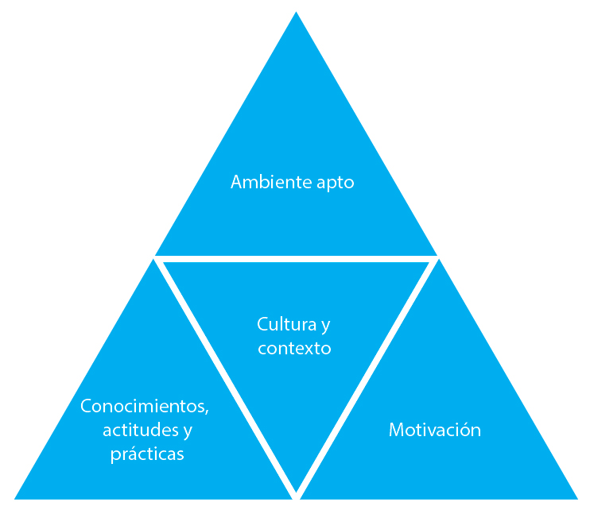

Resumen
- Durante una epidemia, es importante trabajar con la comunidad para cambiar rápidamente las conductas de riesgo con el fin de evitar que la enfermedad se propague.
- Nuestro objetivo en una epidemia es identificar las barreras al cambio y, al trabajar con la comunidad, desarrollar una estrategia que movilice a las comunidades para que se protejan adoptando comportamientos más seguros y menos riesgosos.
- Los comportamientos más seguros pueden incluir acceder y aceptar vacunas, lavarse las manos con jabón en los cinco momentos críticos, usar repelente de mosquitos con regularidad, usar constantemente un mosquitero, o aceptar permanecer aislado de los demás mientras se esté enfermo.
Lo que necesita saber
- Las personas de su comunidad deben participar en los esfuerzos para cambiar su comportamiento. El miedo, la aflicción, las normas sociales, las creencias culturales y religiosas, las prácticas tradicionales y la información errónea influyen en el comportamiento y deben tenerse en cuenta cuando se planifican las intervenciones de salud.
- El simple hecho de proporcionar información acerca de una epidemia no hará que las personas cambien su comportamiento. Considere las cinco etapas del cambio de comportamiento.
- Es importante hablar con las personas sobre sus creencias, normas, ideas y temores con respecto a la enfermedad, escuchar con atención lo que dicen y tomar en cuenta sus opiniones. Una vez que entienda lo que las personas saben, creen y hacen, puede comenzar a pensar en influir en su comportamiento. Usted puede decidir cómo compartirá con las personas la información que tenga sobre la enfermedad, sus síntomas, cómo se propaga y cómo se trata.
- Cualquier movilización social o estrategia para el cambio de comportamiento que utilice debe colocar a la comunidad en su centro, incluso cuando identifique soluciones y estrategias.
¿Qué es el cambio de comportamiento en una epidemia?
En cualquier contexto, el cambio de comportamiento involucra tres elementos. Antes de que la gente cambie su comportamiento:
- Necesitan saber qué, porqué y cómo deben cambiar. Ellos necesitan conocimiento.
- Necesitan tener el equipo adecuado, acceso y capacidad. Necesitan un entorno propicio.
- Necesitan estar motivados para cambiar.
